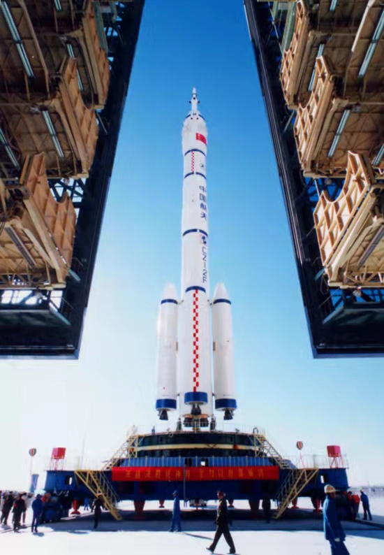

我们的目标是星辰大海！
探索宇宙的秘密
文章作者: Entropy
发布日期: 2021.03.26
欧阳自远：人类终究要走出地球嫦娥奔月一直是中国人家喻户晓的神话故事，谁曾想人类真的实现了到远在38.44万千米以外的月球看一看的梦想。英雄之所以称之为英雄，并不在于我们颂赞的语言，而在于他们始终以高度的事业心、自尊心和锲而不舍地对神奇而美妙的宇宙进行探索的责任感，去实践真正的生活以至献出生命。
1956年10月8日，钱学森受命组建的中国第一个火箭与导弹研究机构成立。
1956年也被认为是中国导弹梦、航天梦的元年。
1970年，中国用第一枚运载火箭“长征一号”将第一颗人造地球卫星“东方红一号”送入太空，中国成为世界上第五个用自制火箭发射国产卫星的国家。
1975年，中国发射了一颗返回式人造卫星，第一次实现人造卫星“收放自如”。
1981年，中国用一枚运载火箭发射了三颗科学实验卫星，成为第四个独立掌握“一箭多星”发射技术的国家。
1999年，中国第一艘无人试验飞船“神舟一号”成功发射，随后“神州二号”“神州三号”“神州四号”陆续顺利发射升空。
2003年，航天员杨利伟穿越大气层，不远万里为浩瀚星空增添了一抹中国红，标志着中国成为世界上第三个将人类送上太空的国家。
2007年，嫦娥奔月再也不是幻想，“嫦娥一号”用相机掀开了月球表面神秘的面纱。
2008年，“神州七号”搭载三名航天员，完成中国航天员首次空间出舱活动。
2010年，“嫦娥二号”获得更高精度的月球表面三维影像，探测月球物质成分、月壤特性、地月与近月空间环境，刷新中国航天新高度。

2010年，“嫦娥二号”获得更高精度的月球表面三维影像，探测月球物质成分、月壤特性、地月与近月空间环境，刷新中国航天新高度。
2012年，“神州九号”与“天宫一号”实现载人“太空之吻”。
2013年，“嫦娥三号”成为中国第一个月球软着陆的无人登月探测器。
2016年，经中央批准、国务院批复，自2016年起，将每年4月24日设立为“中国航天日”。
2018年，“嫦娥四号”带着“玉兔二号”来到了月球背面，开启月球探测新旅程，为人类首次揭开月球背面的神秘面纱。
2019年，新一代固体运载火箭“长征十一号”首次完成海上发射，填补了中国运载火箭海上发射的空白，标志着中国成为世界上第三个掌握海射技术的国家。
2020年7月，中国首次火星探测任务“天问一号”发射升空，迈出了中国自主开展行星探测的第一步。
2020年11月，“长征五号”成功将“嫦娥五号”送入地月转移轨道，开启中国首次地外天体采样返回之旅。 在今年的“中国航天日”主场活动上，将发布中国首个火星车名称，“嫦娥五号”采回的月球样品等也将首次在北京以外地区展出。